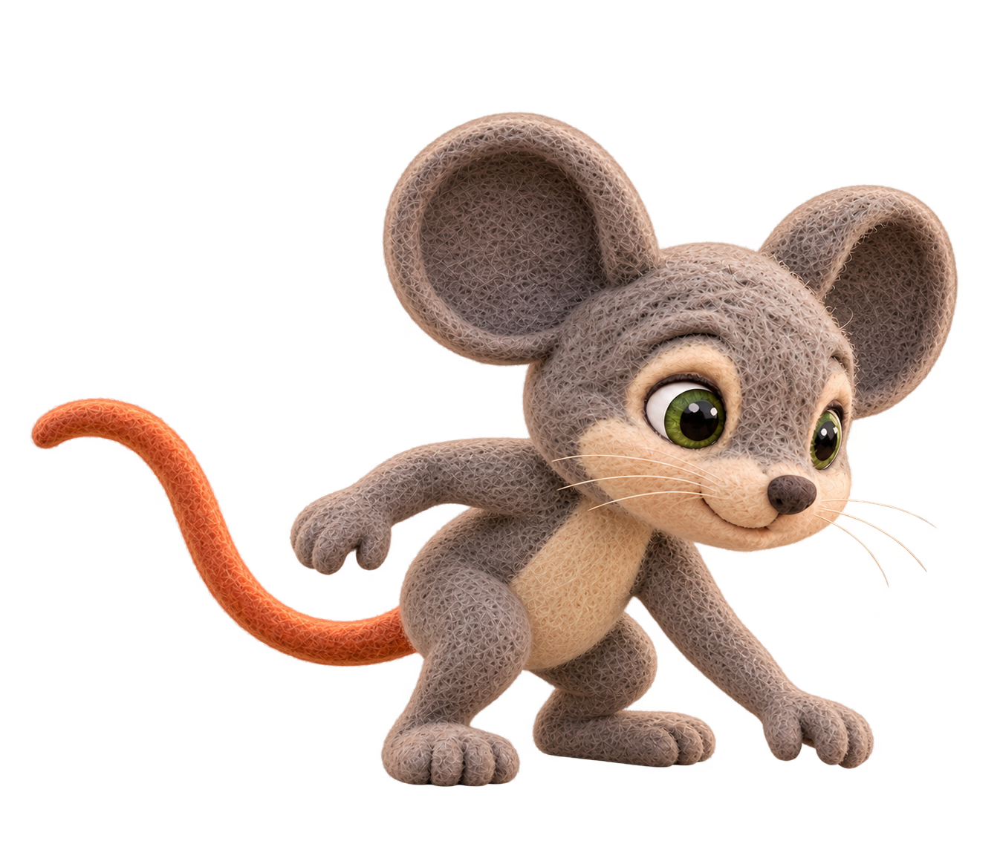

Berry proportion reference

Owner-passed log pose

Rejected seed r002

New seed r003 — pending owner review

Native output inspected: complete ears, feet and tail; closed mouth and no visible teeth. Low reach remains a deep forward crouch with visually prominent head and foreshortened torso. Suspected unresolved proportion/perspective issue; no anatomical measurements or owner approval inferred. Compare against accepted log and berry references before reuse.
One authorized request; no retries. Other passed poses unchanged. Source images remain untouched.
